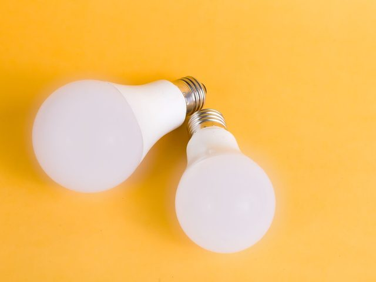
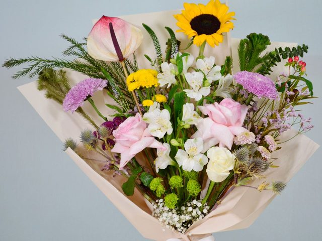
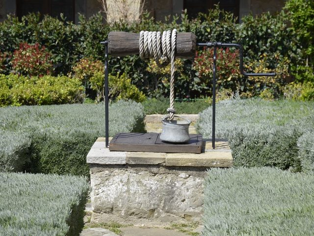

LALA WORD · UNIT 11
一字多義（十一）
More Light, Fewer Stars
23 個單字一字多義
本單元單字一覽
star 是星星，也是「明星」；light 是燈，也是「輕的」「淡的」。這個單元有 5 個主題單字、18 個更多單字，最後整理使役動詞 let／have／make。
starlighthardclearshineblowduckgardengiantmustnewspickpoundprettyradioreachsharesharpslowspacetraintreatwell
每個字先聽 🔊，再一個意思一個意思看例句。
1. star 主題單字．5 個意思

star
star - starred - starred - starring
n.星星；恆星
We can see many stars tonight.
今晚可以看到很多星星。
n.明星movie star 電影明星；rock star 搖滾明星
She wants to be a movie star.
她想當電影明星。
n.星形
Draw a star on the card.
在卡片上畫一顆星星。
n.（等級的）星
We stayed at a five-star hotel.
我們住五星級飯店。
v.主演
Who stars in this movie?
這部電影是誰主演的？
2. light 主題單字．6 個意思

light
light - lighter - lightest；light - lit（lighted） - lit（lighted） - lighting
n.燈
Please turn off the light.
請關燈。
n.光線
Plants need light to grow.
植物需要光才能生長。
adj.明亮的
It's still light outside at seven in summer.
夏天七點外面還很亮。
adj.淺色的；少量的a light meal 清淡的一餐
She is wearing a light blue shirt.
她穿著淺藍色襯衫。
adj.輕的；輕鬆的
This bag is very light.
這個包包很輕。
v.點燃；照亮light up 照亮
Dad lit the candles on the cake.
爸爸點了蛋糕上的蠟燭。
3. hard 主題單字．5 個意思

hard
hard - harder - hardest
adj.困難的
The math test was very hard.
數學考試很難。
adj.堅硬的
The bread is too hard to eat.
麵包硬得吃不下。
adj.嚴厲的be hard on 對…嚴厲
Don't be so hard on yourself.
別對自己那麼嚴格。
adv.努力地
She studies hard every day.
她每天都很用功。
adv.猛烈地；用力地
It is raining hard.
雨下得很大。
4. clear 主題單字．4 個意思
clear
clear - clearer - clearest；clear - cleared - cleared - clearing
adj.晴朗的；清澈的
The sky is clear today.
今天天空很晴朗。
adj.清楚的；明白的It is clear that… 很明顯…
Is that clear?
這樣清楚嗎？
v.清理；收拾clear one's throat 清喉嚨
Please clear the table after dinner.
晚餐後請收拾餐桌。
v.使（頭腦）清醒clear one's head 讓頭腦清醒
A walk helps me clear my head.
散步幫助我讓頭腦清醒。
5. shine 更多單字．4 個意思
shine
shine - shone - shone - shining；（擦亮）shine - shined - shined
v.（陽光、月光）照耀rise and shine 起床囉
The sun is shining.
陽光普照。
v.發亮
Her eyes shone with joy.
她的眼睛因為開心而發亮。
v.表現出色
He really shines at basketball.
他打籃球表現很出色。
v.擦亮
Dad shined his shoes.
爸爸把鞋子擦亮。
6. blow 更多單字．3 個意思

blow
blow - blew - blown - blowing
v.吹blow out 吹熄；blow bubbles 吹泡泡；blow a kiss 送飛吻
The wind blew my hat off.
風把我的帽子吹走了。
v.使驚嘆（blow away）blow + 人 + away 讓人驚豔
The show blew me away.
這場表演讓我驚嘆不已。
v.爆炸（blow up）blow up 爆炸
The old building was blown up.
那棟舊大樓被炸毀了。
7. duck 更多單字．4 個意思

duck
duck - ducked - ducked - ducking
n.鴨子
The ducks are swimming in the pond.
鴨子在池塘裡游泳。
n.鴨肉
Have you tried Peking duck?
你吃過北京烤鴨嗎？
v.迅速低頭
Duck! The ball is coming!
低頭！球飛過來了！
v.躲避duck behind / under 躲到…後面／下面
The cat ducked under the bed.
貓躲到床底下。
8. garden 更多單字．2 個意思

garden
garden - gardened - gardened - gardening
n.花園；菜園
Grandma grows roses in her garden.
奶奶在花園種玫瑰。
v.從事園藝
My aunt loves gardening.
我阿姨很喜歡園藝。
9. giant 更多單字．3 個意思
giant
複數 giants
adj.巨大的
We saw a giant panda at the zoo.
我們在動物園看到大貓熊。
n.巨人
The giant lived in a castle.
巨人住在城堡裡。
n.巨頭；偉人
This company is a giant in the car business.
這家公司是汽車業的巨頭。
10. must 更多單字．3 個意思
❗
must
must 沒有過去式（用 had to）
aux.必須；一定要must not 不可以
You must wear a helmet.
你一定要戴安全帽。
aux.一定（推測）
You must be tired after the long trip.
長途旅行後你一定很累。
n.必需品；必做的事a must-see 必看；a must-have 必備
This museum is a must-see.
這間博物館是必看的。
11. news 更多單字．2 個意思

news
news 不可數（a piece of news）
n.消息No news is good news. 沒消息就是好消息
I have some good news for you.
我有好消息要告訴你。
n.新聞on the news 在新聞上
Dad watches the news every evening.
爸爸每天晚上看新聞。
12. pick 更多單字．5 個意思

pick
pick - picked - picked - picking
v.挑選
Pick a card, any card.
隨便挑一張牌。
v.接人；撿起（pick up）pick up 接人；撿起
Mom will pick me up at five.
媽媽五點會來接我。
v.摘（花、果）
We picked strawberries in Dahu.
我們在大湖採草莓。
v.挖；剔
Don't pick your nose!
不要挖鼻孔！
n.選擇；工具toothpick 牙籤；guitar pick 吉他彈片
Take your pick.
你隨便挑。
13. pound 更多單字．3 個意思

pound
pound - pounded - pounded - pounding
n.英鎊
The book costs ten pounds.
這本書要十英鎊。
n.磅（重量單位）
The baby weighs seven pounds.
寶寶重七磅。
v.連續敲打；（心）怦怦跳
My heart was pounding before the race.
比賽前我的心怦怦跳。
14. pretty 更多單字．2 個意思

pretty
pretty - prettier - prettiest
adj.漂亮的
What a pretty dress!
好漂亮的洋裝！
adv.相當；很pretty much 差不多
The test was pretty easy.
考試相當簡單。
15. radio 更多單字．3 個意思

radio
複數 radios
n.收音機
Can you turn on the radio?
你可以打開收音機嗎？
n.廣播listen to the radio 聽廣播
I heard the song on the radio.
我在廣播上聽到這首歌。
n.無線電通訊
The pilots talk by radio.
飛行員用無線電通話。
16. reach 更多單字．4 個意思

reach
reach - reached - reached - reaching
v.抵達
We reached the top of the mountain at noon.
我們中午到達山頂。
v.達到（年紀、溫度）
The temperature reached 38°C today.
今天氣溫達到三十八度。
v.伸手搆到；幫助reach out to 伸出援手
I can't reach the top shelf.
我搆不到最上面那層架子。
v.聯絡上
You can reach me by phone.
你可以打電話聯絡我。
17. share 更多單字．3 個意思

share
share - shared - shared - sharing
v.分享；共用share + 物 + with + 人
Let's share this pizza.
我們一起分這個披薩吧。
v.分攤；分配
We shared the work.
我們分攤工作。
n.股票
He bought some shares of the company.
他買了這家公司的一些股票。
18. sharp 更多單字．5 個意思

sharp
sharp - sharper - sharpest
adj.鋒利的
Be careful. The knife is sharp.
小心，刀子很利。
adj.嚴厲的；尖銳的（言語）
She gave me a sharp look.
她狠狠地瞪了我一眼。
adj.劇烈的；突然的a sharp turn 急轉彎
I felt a sharp pain in my leg.
我的腿一陣劇痛。
adj.清楚的；明顯的
This photo is very sharp.
這張照片很清楚。
adj.敏銳的；聰明的have a sharp eye for 對…有敏銳的眼光
Grandpa still has a sharp mind.
爺爺的頭腦還很靈光。
19. slow 更多單字．5 個意思

slow
slow - slower - slowest
adj.慢的
My watch is five minutes slow.
我的錶慢了五分鐘。
adj.遲鈍的
He is a little slow at math.
他數學反應有點慢。
adj.（生意）冷清的
Business is slow on rainy days.
下雨天生意很冷清。
v.減速slow down 減速
Slow down! You're driving too fast.
慢一點！你開太快了。
adv.慢慢地
Go slow, please.
請慢慢來。
20. space 更多單字．4 個意思

space
space - spaced - spaced - spacing
n.空間
There isn't enough space for a sofa.
沒有足夠的空間放沙發。
n.空位
Is there a parking space?
有停車位嗎？
n.太空
Astronauts live in space for months.
太空人在太空住好幾個月。
v.隔開；留空
Space the chairs evenly.
把椅子平均排開。
21. train 更多單字．3 個意思
train
train - trained - trained - training
n.火車take a train 搭火車；get on / off the train 上／下火車
Let's take the train to Hualien.
我們搭火車去花蓮吧。
n.（禮服的）拖尾
The bride's dress has a long train.
新娘的禮服有長長的拖尾。
v.訓練train + 人／動物 + to V 訓練…做
He trains his dog to sit.
他訓練他的狗坐下。
22. treat 更多單字．5 個意思

treat
treat - treated - treated - treating
v.對待
Don't treat me like a baby.
別把我當小孩子。
v.看待
She treated it as a joke.
她把它當成玩笑。
v.治療
The doctor treated his cut.
醫生處理了他的傷口。
v.請客；款待trick or treat 不給糖就搗蛋
Let me treat you to lunch.
我請你吃午餐。
n.請客；好東西
This is my treat.
這次我請客。
23. well 更多單字．4 個意思

well
well - better - best
adv.好地as well 也
She sings very well.
她唱歌很好聽。
adj.健康的get well soon 早日康復
I don't feel well today.
我今天不太舒服。
int.嗯；好吧
Well, let me think.
嗯，讓我想想。
n.井
The village gets water from a well.
這個村子從井裡取水。
易混淆字：使役動詞 let／have／make
| 單字 | 句型 | 例句 |
|---|---|---|
| let | 允許：let + 受詞 + 原形動詞 | Mom let me play games for an hour. |
| have | 要求、安排：have + 人 + 原形動詞；have + 物 + p.p.（讓東西被處理） | I had my hair cut. |
| make | 強迫、使得：make + 受詞 + 原形動詞／形容詞 | The sad movie made me cry. |
三個都是「受詞 + 原形動詞」，不加 to。
一字多義：最常見 vs. 容易忽略的意思
| 單字 | 最常見的意思 | 容易忽略的意思 |
|---|---|---|
| light | 燈；光 | 輕的；淺色的；點燃 |
| duck | 鴨子 | 迅速低頭；躲避 |
| pound | 英鎊 | 磅；（心）怦怦跳 |
| pretty | 漂亮的 | 相當（pretty easy） |
| share | 分享 | 股票 |
| train | 火車 | 訓練；禮服拖尾 |
| treat | 對待 | 請客；治療 |
| well | 好地 | 健康的；井 |
常用片語
| 片語 | 意思 | 例句 |
|---|---|---|
| pick up | 接人；撿起 | I'll pick you up at six. |
| slow down | 減速 | Slow down, please. |
| blow out | 吹熄 | Blow out the candles! |
| be hard on | 對…嚴厲 | Don't be so hard on him. |
| get well soon | 早日康復 | Get well soon! |
| This is my treat. | 這次我請客 | Put your money away. This is my treat. |
快問快答：這句的 粗體字 是什麼意思？
1Who stars in this movie?主演
2Dad lit the candles on the cake.點燃；照亮
3It is raining hard.猛烈地；用力地
4A walk helps me clear my head.使（頭腦）清醒
5Dad shined his shoes.擦亮
6The old building was blown up.爆炸（blow up）
7The cat ducked under the bed.躲避
8My aunt loves gardening.從事園藝
快問快答：這句的 粗體字 是什麼意思？
1This company is a giant in the car business.巨頭；偉人
2This museum is a must-see.必需品；必做的事
3Dad watches the news every evening.新聞
4Take your pick.選擇；工具
5My heart was pounding before the race.連續敲打；（心）怦怦跳
6The test was pretty easy.相當；很
7The pilots talk by radio.無線電通訊
8You can reach me by phone.聯絡上
學完了！接下來
複習方法
review
- 回到「📗 單字卡」，按「遮中文」，看例句說出每個意思
- 特別記「容易忽略的意思」（例如 pen 圍欄、ball 舞會）
- 每個例句跟著 🔊 唸一次
準備好了
- 按右上角「📝 前往測驗」
- 測驗錯的題目要訂正到全對
- 訂正完成補送 1 點